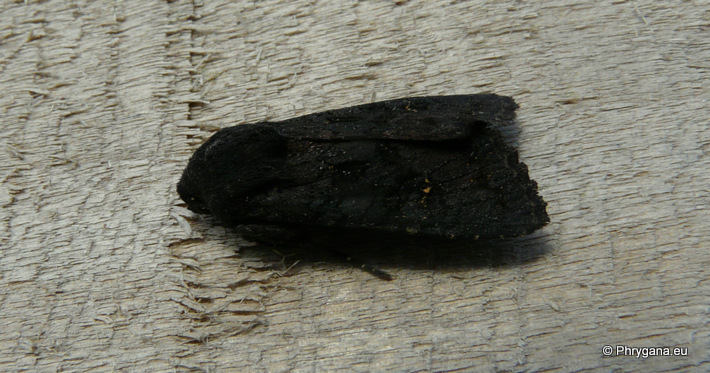
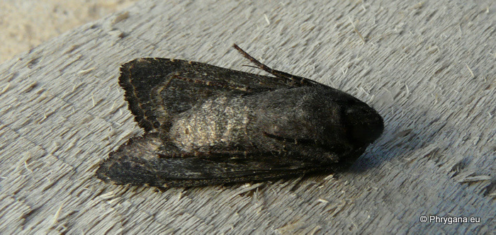
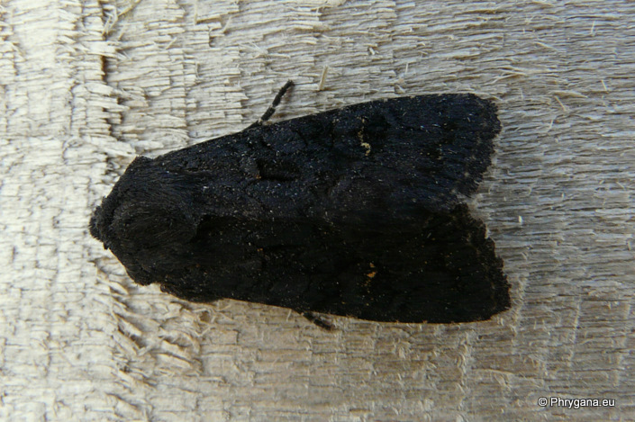
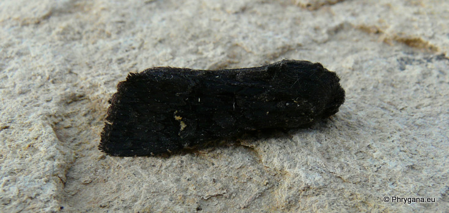
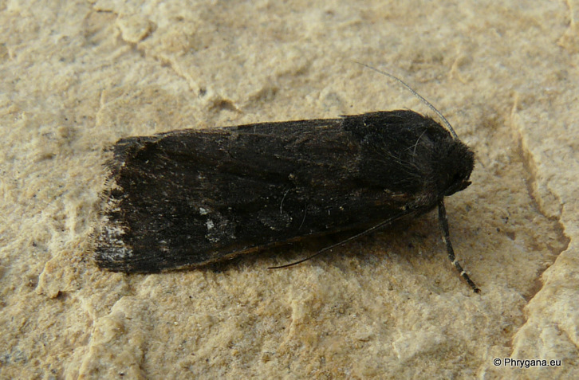

| PHRYGANA | Fauna | Flora |
additions nouveautés |
espèces species |
contact -
info - commentaires phrygana1 (at) gmail.com |
| diversité crétoise -- Cretan diversity | |||||
| Aporophyla (Phylapora) nigra cinerea Staudinger 1901 |
| 207 | Fauna | NOCTUIDAE | Xyleninae | Aporophyla |
 Aporophyla nigra cinerea Melambes (Agios Giorgos) 09 décembre 2010 |
| en: Black rustic de: Schwarze Glattrückeneule fr: la Noctuelle anthracite | |
| Couleur de fond variant du brun noir au noir brillant; bord supérieur de la réniforme blanc sle à beige | |
| Envergure: 36 - 42 mm | |
| Oeuf blanchâtre de forme ovale; | |
| Chenille: polyphage, s'attaque à des Poaceae, Genista sp., Rumex sp., Trifolium sp.; chrysalide souterraine | |
| Espèce univoltine, peut-être bivoltine? | |
| Période de vol: octobre novembre décembre | |
| Statut en Crète: indigène -- native | |
| Biotopes en Crète: phrygana, olivaies, garrigue, champs | |
| Distribution: Europe, Afrique du Nord, Moyen-Orient, Caucase, Asie centrale. | |
| Note: Aporophyla nigra cinerea vient à la lumière. | |
|
 Aporophyla nigra cinerea Melambes (Agios Giorgos) 09 décembre 2010 |
|
 Aporophyla nigra cinerea Melambes (Agios Giorgos) 09 décembre 2010 |
|
 Aporophyla nigra cinerea Melambes (Agios Giorgos) 29 novembre 2009 |
|
 Aporophyla nigra cinerea Melambes (Agios Giorgos) 21 décembre 2010 |
| 21 décembre 2010 |
| © paul fontaine -- © Phrygana.eu 2007 -- 2013 |